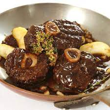

Vension Shanks
Slow Cooked

Shanks come from the front and back lower legs. This dish is hearty and delectable.
This prepartion pairs well with a cold winters evening and red wine.
This can be done with any hooved animal the bigger the better
A small white-tail deer would not work as well Elk and moose work well. See the butching section to familize yourself with the preparation.
Ingredients
- 2-6 shanks depending on the size
- Heavy Dutch Oven or Slowe Cooker
- Carrots
- Potatoes
- Celery
- Head of Garlic
- Onion
- Herbs and spices to liking
Steps
- Remove silver skin from shanks
- Oil shanks with olive oil and salt and pepper
- Heat pan and had shanks turning until browned on all sides
- Add veg to slow cooker or dutch oven
- Add shanks and cook until done